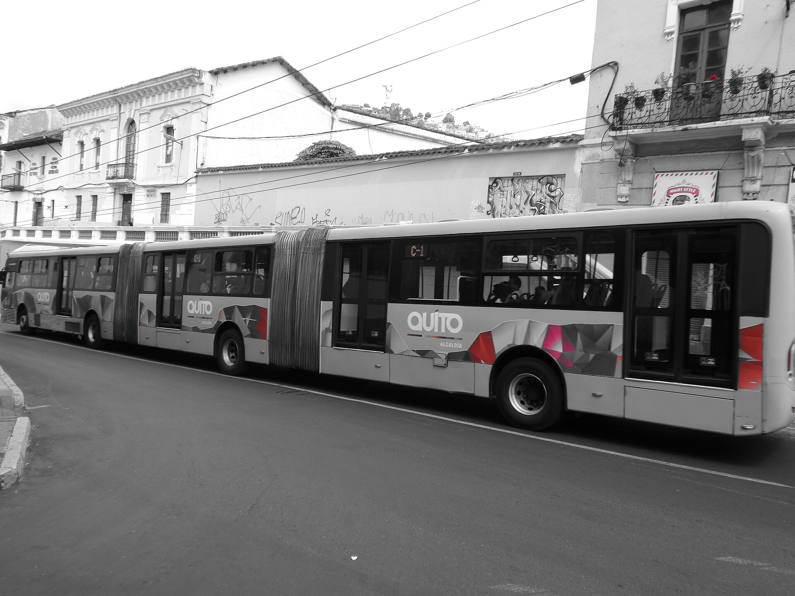

Galería de imágenes
Conoce algunos elementos importantes del transporte público a través de estas imágenes. Los buses y las paradas permiten que los ciudadanos se movilicen diariamente hacia sus destinos.
El transporte público

Las paradas de bus

Los buses

Reproductor de audio
Escucha un sonido relacionado con el transporte público.
Reproductor de video
Observa un video relacionado con los medios de transporte.
Video con subtítulos
Este reproductor permite mostrar subtítulos si tienes un archivo de subtítulos en formato VTT.